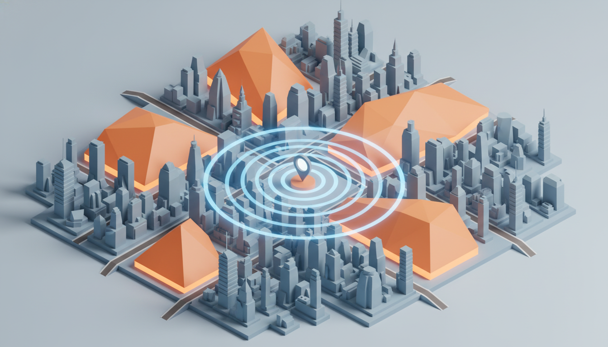

Architectural Evolution:
Scaling HOMEase | AI
with Next.js 15 and Supabase
In the rapidly evolving landscape of AI-driven platforms, the architectural foundation of an application determines its eventual success or failure in production. For HOMEase | AI, a platform dedicated to transforming home accessibility through augmented reality and intelligent contractor matching, the initial reliance on a fragmented Google Cloud and Firebase stack introduced significant 'glue code' overhead—primarily for manual data synchronization between NoSQL and external authentication providers—and operational friction.
This technical blueprint details the strategic migration to a unified ecosystem centered on Next.js 15 and Supabase. By consolidating frontend logic, server-side orchestration, and relational data management into a cohesive framework, we eliminate the latency of inter-service networking overhead and the complexity of managing disparate systems. This transition is a fundamental shift toward developer velocity and system integrity, leveraging PostgreSQL for geospatial intelligence, Supabase Edge Functions for asynchronous AI orchestration, and the Next.js App Router for a high-performance, server-rendered experience.
1. The Strategic Pivot: Full-Stack Consolidation
The decision to migrate from a legacy GCP/Firebase infrastructure to a unified Next.js 15 and Supabase stack was driven by the need for architectural simplicity. In the previous iteration, developers were forced to manage complex IAM roles and bridge the gap between NoSQL (Firestore) and relational requirements.
By moving to Vercel and Supabase, we achieve a 'single source of truth'. Next.js 15, with its App Router and Server Actions, allows us to treat the backend as a seamless extension of our frontend components, while Supabase provides a robust PostgreSQL engine that handles everything from identity management to geospatial queries. This consolidation reduces the surface area for bugs and significantly accelerates the deployment of core AI and AR features.
2. Data Modeling and RLS-First Security Architecture
At the heart of HOMEase is a relational data model designed for multi-tenant isolation. Unlike NoSQL alternatives, PostgreSQL allows us to enforce complex relationships between homeowners, projects, and contractors. Security is baked into the database layer via Row Level Security (RLS), ensuring data isolation at the engine level.
-- Example: Enforcing Project Access via RLS
ALTER TABLE projects ENABLE ROW LEVEL SECURITY;
CREATE POLICY "Homeowners can access their own projects"
ON projects
FOR ALL
USING (auth.uid() = homeowner_id);
CREATE POLICY "Contractors can view matched projects"
ON projects
FOR SELECT
USING (
EXISTS (
SELECT 1 FROM project_matches
WHERE project_matches.project_id = projects.id
AND project_matches.contractor_id = auth.uid()
)
);The schema utilizes a profiles table extending auth.users, an ar_assessments table for AR data, and project_matches to manage the marketplace logic. This ensures that as the platform grows, data remains consistent and queryable.
3. Asynchronous AI Pipeline: Orchestrating Gemini and Fal.ai
The HOMEase experience relies on heavy-duty AI processing. We implemented a non-blocking asynchronous pipeline using Supabase Edge Functions. To minimize cold-start latency, we migrated from standard Node.js environments to Deno-based Edge Functions, which provide near-instant execution at the edge.
// Supabase Edge Function: Orchestrating AI Analysis
// Using Deno-based runtime for lower cold-start latency
import { createClient } from 'https://esm.sh/@supabase/supabase-js@2';
export const processAssessment = async (projectId: string, images: string[]) => {
const supabase = createClient(Deno.env.get('SUPABASE_URL'), Deno.env.get('SUPABASE_SERVICE_ROLE_KEY'));
// 1. Update status to 'processing'
await supabase.from('ar_assessments').update({ status: 'processing' }).eq('project_id', projectId);
// 2. Call Google Gemini for Hazard Analysis
const hazardReport = await analyzeWithGemini(images);
// 3. Call Fal.ai for Visual Prototyping
const visualization = await generatePrototypes(images, hazardReport);
// 4. Persist and trigger Realtime notification
await supabase.from('ar_assessments').update({
report: hazardReport,
visuals: visualization,
status: 'completed'
}).eq('project_id', projectId);
};4. System Overview: From Analysis to Action
The true power of the HOMEase architecture lies in the transition from raw data to actionable insights. Once the AI pipeline completes its analysis of a home's accessibility needs, the system must immediately translate these findings into a commercial opportunity. This bridge connects the unstructured data generated by Gemini and Fal.ai with our structured marketplace, triggering the geospatial matching engine to find the most qualified local professionals to execute the recommended modifications.
5. Geospatial Intelligence with PostGIS
Connecting homeowners with the right contractors requires precise geospatial calculations. HOMEase utilizes the PostGIS extension within Supabase to perform high-performance spatial queries. Contractors define their service areas as polygons, and projects are represented as points. We use the ST_Contains function to identify all contractors whose service area encompasses a specific project location, providing much higher accuracy than simple radius-based matching.

6. Financial Infrastructure: Stripe Connect Integration
Monetization is handled through a multi-party financial flow powered by Stripe Connect. This allows the platform to facilitate payments while automatically deducting a platform fee. We utilize Stripe's Express accounts for contractor onboarding, ensuring KYC compliance. The integration is managed via a centralized webhook handler in a Supabase Edge Function, ensuring project statuses and payment records are synchronized in real-time.
7. DevOps and the Vercel Deployment Pipeline
To maintain high code quality, we employ a CI/CD pipeline using GitHub Actions and Vercel. Every pull request triggers a preview deployment and automated tests, including Vitest for unit testing. Environment variables are managed securely through Vercel, with separate configurations for staging and production. This ensures that infrastructure changes—such as database migrations or updated Edge Functions—are validated before reaching production.